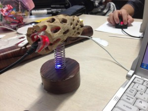
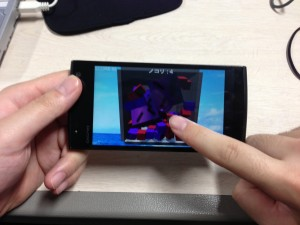
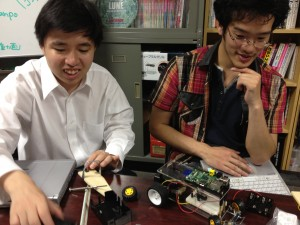
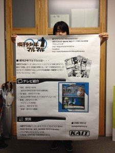
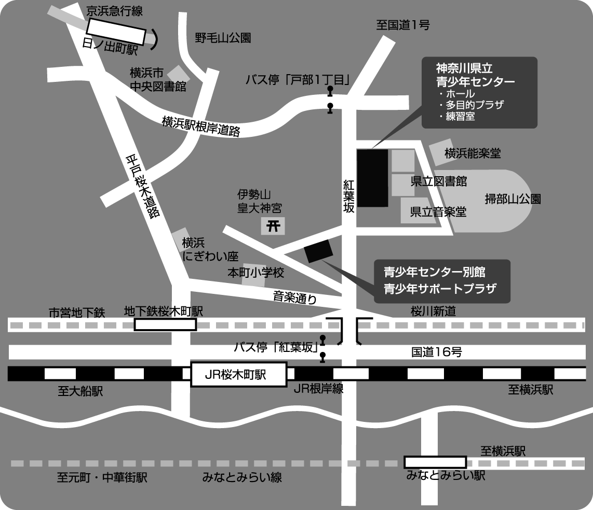

「科学のひろば2013」で展示します
2013年6月15日（土）、10:00-15:30、神奈川県立 青少年センターにて神奈川工科大学主催「科学のひろば」にて展示を行います。
{kind=link}
4年生のデビュー戦の場所となりつつあるこのイベントですが、
白井研のからは以下の展示が予定されております。
1. スマ歩！ in 科学のひろば（向井 優善）
スマートフォンを使って散歩した時の写真をかき集めます！試験段階なので至らないと思われるところが多々あると思われますが、今回のイベントで多くの人に体験していただければ幸いです。
[browser-shot url=”https://plus.google.com/u/0/communities/106373607946437351828″ width=”600″]
2. Gorin Panic（田所 康隆）
加速度センサーを使ったコントローラーをつくり、それを使ったシューティングゲームを作りました。フィールド上にたくさんいる、足が5本ある平面世界のキリン「ゴリン」を倒しまくってください。
{kind=link}
3. Angry 〇〇（石川 晃）
重さの違う２種類の玉を上手に使って、軽いほうの玉をゴールに入れる簡単なゲームをつくってみました！
ぜひプレイして、感想をお聞かせくださいませ！
4. ハコ －HAKO－（國富 彦岐）
スマートフォンの画面をタップしてお部屋の片付けゲーム！ゲームコーナーではそれぞれのゲームを通してユーザーインターフェースの操作性について調査します。
{kind=link}
5. 100メートル走（小西 瑞輝）
iPhoneを全力でタップしてより早く100メートルを走らせるゲームを作ってみました。
あなたの連打力が試されます。
6. ひとつぶし（野村 結花）
ひとつぶしとはモグラ叩きを真似たAndroidアプリで、モグラの代わりに出てくるキャラクター（人型）を
叩いていくゲームとなっています。
{kind=link}
7. フォントと書籍のアンケート（小池 智之、李 樹英）
芸術科学会誌「DiVA」33号の小冊子版と電子書籍リーダーKindle Paperwhiteをもちいて、漫画のフォントと電子書籍についてのアンケートを行っています。3分で答えられるアンケートなので気軽に立ち寄っていってください。
8. 謎のセンサー（北田 大樹）
人の動きを可視化することができる測域センサを使って、ブース内の人の動きを計測しております。
9. ラズコン（太田 拓也、神戸 政樹）
小型PC搭載のラジコンを、スマフォから動かせます。
動かしに来てください。名前は「RaspberryPi」という極小Linuxからきています。
{kind=link}
10.瞬刊少年マルマル（小出 雄空明、藤村 航、奈良 優斗）
TVでも何度も紹介されたあの「瞬刊少年マルマル」を展示します！
瞬刊少年マルマルは体験者がマンガの主人公になれるVRエンタテイメントシステムです。
もちろん、体験後にはおみやげとしてオリジナルのマンガが手に入ります。
さらにバージョンアップした瞬刊少年マルマルをいち早く体験するチャンス！
{kind=link}
11.体験！超電導と液体窒素―196度の世界
内容：窒素は空気中の約80%を占めるありふれた気体。窒素を液体にすると、不思議な現象を観察することができます。そのひとつが超伝導です。このイベントでは液体窒素と超伝導を使った実験が体験できます。
実演：外口慶樹(ロケットコミュニケーションズ)
定員：先着10名(見学可)
開始時刻：11時、13時、15時 [各回45分間]
皆様のお越しをお待ちしております。
場所：神奈川県立青少年センター
所在地 郵便番号220-0044 横浜市西区紅葉ヶ丘9-1
電話：045-263-4463（管理課）
https://www.pref.kanagawa.jp/cnt/f602/p7333.html
交通機関の案内
鉄道を利用して
JR根岸線、横浜市営地下鉄線で「桜木町駅」下車、徒歩10分
京浜急行線で「日ノ出町駅」下車、徒歩10分
みなとみらい線で「みなとみらい駅」下車、徒歩20分
バスを利用して ～横浜駅東口から
横浜市営バス（8、26、58、89、105、109、127、148系）で「紅葉坂」下車、徒歩4分
横浜市営バス（103系）で「戸部１丁目」下車、徒歩2分
参加は無料、開催時間は10:00～15:30です。
皆様のお越しをお待ちしております。
神奈川県立青少年センター
https://www.pref.kanagawa.jp/cnt/f602/p7333.html
所在地 郵便番号220-0044 横浜市西区紅葉ヶ丘9-1
電話：045-263-4463（管理課）
交通機関の案内
鉄道を利用して
JR根岸線、横浜市営地下鉄線で「桜木町駅」下車、徒歩10分
京浜急行線で「日ノ出町駅」下車、徒歩10分
みなとみらい線で「みなとみらい駅」下車、徒歩20分
バスを利用して
横浜駅東口から
横浜市営バス（8、26、58、89、105、109、127、148系）で「紅葉坂」下車、徒歩4分
横浜市営バス（103系）で「戸部１丁目」下車、徒歩2分
アクセスマップ

「「科学のひろば2013」で展示します」への1件のフィードバック
コメントは停止中です。